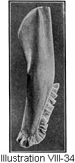

1917—American Dressmaking Step by Step
by Mme. Lydia Trattles Coates
Chapter 8—Specific Work on Garments
Lesson 140—Preparation of a Loose Waist or Corset-Cover for Fitting (Illustration VIII-1)
140—Preparation of a Loose Waist or Corset-Cover for Fitting (Illustration VIII-1)

After the garment has been basted together it is prepared for fitting.
The Stay Line
- To make the stay line use a double thread of the same color used to finish the garment. Never use basting thread for this work.
- Leave at least 4 inches on each end of the thread and make a knot at each division.
- Do not shirr the material or draw the threads tight until the garment is ready to hang.
- Never let a stay line or draping line cross a center-back, center-front or a side line without a break at these points, as this makes it easier to adjust the garment properly.
- Begin at the center-back at the waist-line, and bring the shirrings across to within 1 1/2-inch of the underarm seam at the waist-line. Begin 1 1/2-inch on the opposite side of the underarm seam and carry the line to the center-front.
Lesson 141—The Draping Line
Make a line of small even stitches 1 1/2-inch above the waist-line, making the same divisions as in the stay line.
For underwear this row of shirring is made one-half an inch above the natural waist-line.
Lesson 142—The Temporary Belt
The temporary belt is a straight piece of muslin at least 2 1/2 inches wide and 2 inches longer than the waist-line measures. On this strip of muslin the waist is hung to obtain the correct lines.
Lesson 143—Hanging a Loose Waist or Corset Cover (Illustration VIII-2)
It is necessary in the hanging of a loose waist or corset-cover that the stay threads and draping threads are in the right place; that they be put in correctly, and that there is at least 4 inches of end left on each division of the threads.
To Hang a Loose Waist or Corset-Cover
- Place the temporary belt around the waist and pin together at the center-front if the garment opens in front, or at the center-back if the garment opens in the back.
- Put on the garment and pin it together without drawing the stay threads or the draping threads.
- Pin the stay line of the garment, pinning the center-back and center-front line of the waist to the center-back and center-front of the temporary belt.
- Pin underarm line of garment to temporary belt at waist-line.
- As no shirring or fulness comes nearer to the underarm seam than 1 1/2-inch, pin the garment to the stay belt 1 1/2-inch from each side of the underarm seam.
- Let the garment fall naturally on the side-back lines. Place the hand at about the center of the shoulder seam and let it fall downward to the bottom of the waist, following the side-back line. Pin the garment to the waist-line at this point. This distributes the gathers so that they hang correctly from the shoulder-blade line and in the right proportions toward the underarm seam.
- Draw the stay threads. Always drape from the center toward the sides. Draw the stay threads back and forth so they move easily. Draw the threads tightly, fastening them around the pin placed 1 1/2-inch from the underarm seam.
- Stroke the gathers on this stay line until they fall evenly, and hold them in place with pins placed straight up and down on the stay line.
- Bring the hand from the center of the shoulder seam downward over the tip of the bust, following the side-front line. Pin the garment at this point to the temporary belt.
- When the work is finished on the stay line, begin at the center back and take both ends of the threads of the draping line, and draw the threads back and forth, lifting them upward to bring the gathers straight up and down from the stay line. Draw the thread tightly and wrap around the pin which has been set 1 1/2-inch from the underarm seam.
- Stroke the gathers straight up and down from the stay line holding them in place with pins set so that they alternate between the pins on the stay line.
- If, when all of the draping is completed, the garment requires alteration, alter according to Lesson 145.
Lesson 144—Waist Alterations for Fitted Garments (Such as linings, waists, tailored coats, Princess slips, brassieres, etc.) (Illustrations VIII-3, 4, 5, 6, 7, and 8)
- If a garment is too large or too small, take up (Illustration VIII-3, A, B), or let out (Illustration VIII-4, D, E), an equal amount on all side seams, front and back, from shoulder to waist-line. Then take up (Illustration VIII-3, C), or let out Illustration VIII-4, F), on the underarm seam to complete the fitting.
- If the waist-line needs altering. If the garment fits everywhere except that it is too large around the waist-line, take it up on the underarm seams. (Illustration VII-5, G.) In some cases it may be taken up on the darts or side seams. (Illustration VIII-5, H.) If the garment is too small around the waist-line, first let out the darts, then let out the underarm seams.
- If a garment is too wide or too narrow across the shoulders and chest, alter on front side seams from shoulder to tip of bust. (Illustrations VIII-6, I and 7, J.)
- If a garment is too wide or too narrow on the across back line and the shoulders, alter on the side-back seams from shoulder to shoulder-blade-line. (Illustrations VIII-6, K and 7, L.)
- If a garment is too long or too short on the shoulder and fits across the chest and across the back, alter on the side seams from the shoulder to the chest-line (Illustrations VIII-6, I and 7, J), and from the shoulder to the across back line. (Illustrations VIII-6, K and 7, L.)
- If a garment is too long or too short from shoulder to tip of bust, or from neck to bust-line, or in the arm-scye, the alterations are made on the shoulder seams of the garment, taking up on the shoulder seam to shorten (Illustration VIII-3, M), or letting out the shoulder seam to give added length (Illustration VIII-5, N). This alters the garment for a flat or full chest, high or low bust, for thin or fleshy front arm-scye, or for square or sloping shoulders.
- If a garment is too long or too short from neck to shoulder-blade line, or from shoulder to shoulder-blade line, or in the back arm-scye, all alterations must be made on the shoulder seam, taking up the seam to shorten (Illustration VIII-8, O), or letting out the seam to lengthen (Illustration VIII-5, P). This is the alteration made for high or low shoulder-blades, thick or thin shoulders, fleshy or thin back arm-scyes, or stooping or straight shoulders. All alterations for round shoulders or protruding shoulder-blades or very straight figures with receding shoulder-blades should be made on the pattern. (See Lessons 21 and 22.)
- If a garment is too long waisted, it must be re-fitted at the waistline and the seams re-adjusted below the waist-line. (Illustration VIII-8, Q, R, and S.)
- If a garment is too short waisted, it must either be entirely refitted or be set into a belt or be covered by a girdle, or the skirt cut with a waistline high enough to make up for the shortage in the length of the waist.
Lesson 145—Alterations for Loose Waists (Such as shirts, waists, corset-covers, dressing-sacks, combinations, or any model which has only the underarm seam.)
The Loose Waist is altered the same as the tight waist in previous lesson, except that the alterations made on the side seam of the tight-fitting waist must, whenever possible, be made on the arm-scye and on the underarm seam of the loose waist.
Lesson 146—To Remove the Garment from the Temporary Belt
- Back-stitch the gathers so they will not move out of place, being careful not to catch the stitches through the temporary belt.
- Then take out the pins and remove the garment.
- Finish the lower edge of the waist in any of the methods given in Lessons 149 to 158 inclusive.
METHODS OF FINISHING THE BOTTOMS OF WAISTS
Lesson 147—To Stay the Gathers at the Waist-Line
- Adjust the garment to tape to hold the gathers in place. Stitch the tape at the upper and lower edges to secure it to the garment. (Illustration VIII-9.)
- Or, this tape may be only stitched across the back, and the front gathers will be adjusted each time under the tape which is left long enough to tie in front. (Illustration VIII-10.)
- Or, sew on a facing with the lower edge of the facing at the waistline, and the upper edge just above it (Lesson 96, steps 1 and 2), and then run a cotton or elastic tape between the facing and the garment and draw to any fulness desired. (Illustration VIII-11.)
This method is one of the simplest ways of finishing the bottom of a waist. If a tape has been used for a draw-string, the waist can be laundered the same as any flat work.
Lesson 148—To Make the Plain Band (Illustrations VIII-12, 13, and 14)
- Cut a strip of material the exact length, and twice the width the finished band is to be, making an allowance on all edges for turning.
- Turn under all edges the amount of the allowance for same. (Illustration VIII-12.)
- Fold the band in the center keeping all edges even, and baste. (Illustration VIII-13.)
- Slip the edges of the band over the edge of the garment, bringing the garment between the folds of the band.
- Baste the three edges. (Illustration VIII-14.)
- One row of stitching on all four edges now completes the band. Or one may blind stitch the band to the garment and overcast the ends of the band together.
Lesson 149—Joining Bands (Illustration VIII-15)
A Joining Band is for the purpose of joining two or more garments. For instance, a corset-cover and skirt are joined with a joining band, which is made as follows:
- Cut two strips of material the exact width and length the band is to be, allowing 3/8 of an inch on all edges for turnings.
- Turn under all edges 3/8 of an inch.
- It makes no difference whether the band is first joined to the outside or the inside portion of the garment. Both sides are finished the same. Baste one of the turned strips 3/8 of an inch above the draping line of the waist or corset-cover. Use colored thread, and baste 1/8 of an inch from the edge of the band. The colored thread will be the guide line to show just where to place the band on the opposite side.
- The other edge of the belt is basted 3/8 of an inch below the top edge of the skirt or lower garment, and is basted with the colored thread 1/8 of an inch from the edge of the band.
- Turn the garment to the opposite side, and baste the belt 1/8 of an inch outside of all of the colored bastings.
- One row of stitching around the four edges of the belt finishes the joining of the garment on both sides.
Lesson 150—The Faced Band
Sometimes one desires to use embroidery, insertion, or beading to make the over-portion of the joining band.
To Make the Faced Band
- If the embroidery strip has a margin, turn under the margin. If using embroidery beading or lace, it will be used just as it is.
- Make the top portion of the band of the embroidery beading or the insertion. The linen or lawn margin is turned under to the finished portion of the embroidery or beading, and basted.
- Cut the lining or under portion of band the exact width of finished insertion or beading plus 3/8 of an inch on all edges for turnings.
- Baste all under turnings on these edges 3/8 of an inch.
- Apply the same as the joining band. (Lesson 149.)
Lesson 151—To Make the Band Casing
- Make the band exactly the same as for the plain band (Lesson 148), except that it is made larger around the waist to allow more freedom.
- Finish the ends of the band with a narrow hem (Lesson 85), or facing (Lesson 95), and draw elastic tape through the band to hold the garment snugly to the waist.
Lesson 152—The Plain Casing (Illustration VIII-16)
Many persons prefer a casing for the bottom finish of a garment, especially light silk waists and garments they desire comfortable around the waistline. If the waist is cut so that the bottom edge can be turned up for hemming, it may be turned and stitched on both the lower and the turned edge. The usual method, however, is not to turn up a hem, but to finish the garment at the waistline with either a straight sewed-on or set-on overfacing. (Lesson 95 or 96.) After the turnings have been made, or the facing put on, insert an elastic tape about 1 inch wide and of a length which, by stretching slightly, reaches around the waistline, and then sew on the hooks and eyes.
Lesson 153—The Overcasing (Illustration VIII-17)
For garments where every line must fall exactly right, the overcasing is found to be the best to use.
To Make the Overcasing
- Prepare the garment for draping. (Lesson 140.)
- The casing used is nothing more or less than the temporary stay belt. Make the stay belt of the same material as the garment. (Lesson 142.)
- The waist is then draped on to the temporary stay belt (Lesson 143), which is put around the body much looser than a band.
- The garment is then stitched to the lower edge of the temporary stay belt or casing.
- Bring the casing over the lower edge of the waist and upward on the right side of the garment.
- The edges of the stay belt are then basted and stitched flat to the waist.
- Elastic is then drawn through the casing.
- Sew the hooks and eyes on to the ends of the elastic. (Lesson 215.)
PEPLUMS
Lesson 154—The Unlined Peplum
An Unlined Peplum is hemmed or faced around the lower edge and is put on with a flat French seam (Lesson 61), or it may be put on exactly as is a faced ruffle. (Lesson 126.)
Lesson 155—The Lined Peplum
Place the right sides of both lining and outer portion together and stitch around the lower edge and their turn right sides out, or it may have all edges turned in 3/8 of an inch and basted together and stitched close to the edge of the peplum.
Turn in the open top edges and slip the garment between, bringing the upper edges of the peplum 1/8 of an inch above the stay line of the garment and stitch.
The lined peplum is made exactly as is a belt. (Lesson 182.) This makes the garment finish alike on both sides.
Lesson 156—The Band and Peplum
To finish the bottom of a waist with both a band and peplum, join with a joining band. (Lesson 149.) This is especially desirable for fleshy or large women.
Lesson 157—Joining Garments with Insertion or Beading Having a Margin (Illustration VIII-18)
To join a garment with beading or embroidery or insertion which has a linen or lawn margin, it is usually best to make the upper joinings with a French seam (Lesson 60) and the lower joinings with a flat French seam (Lesson 61). The loose edge which is always on a French seam is not desirable on the top edge of a petticoat or drawers, so the edge of the seam which is loose may be stitched flat to the garment, forming a flat French seam.
If machine stitching is not desired to finish the flat French seam, use the hemming stitch. (Lesson 49 or 50.)
Or if the roll seam (Lesson 63) is used instead of the French seam (Lesson 60) or flat French seam (Lesson 61), the work will be much daintier altho not so durable or so quickly done.
The roll seam is preferable when the garment is made by hand.
 Lesson 158—Joining Garments with Beading or Insertion Having No Margin (Illustration VIII-19)
Lesson 158—Joining Garments with Beading or Insertion Having No Margin (Illustration VIII-19)

To Join Garments With Beading or Insertion Having No Margin
- Finish the top of the skirt or drawers, or lower garment with a very narrow facing (Lesson 95 or 96), a very narrow hem (Lesson 85), or roll hem (Lesson 91).
- Whip through every mesh of the embroidery or beading, joining the insertion to the upper portion of the lower garment. (Lesson 227.)
- The upper portion of the garment may be joined in the same manner. (Lesson 138, step 3.)
Lesson 159—To Finish the Bottom of the Fitted Waist
The lower edge of a fitted waist is either hemmed (Lesson 85) or finished with a bias sewed-on facing (Lesson 95).
Lesson 160—To Join Waists and Skirts Together
- The skirt is fitted to a permanent stay belt. The top of the skirt is then brought to the correct line of the waist and they are machine stitched together. The waist portion is then trimmed up to 3/8 of an inch of the stitching and the raw edges covered neatly with a narrow facing, or the entire belt is covered with lawn or lining to hide all darts, stitching, and raw edges.
- When a stay belt is not used and a belt is desired, a joining band is applied. (Lesson 149.)
VESTS
Lesson 161—The Lined Vest
- Apply the lining, following instructions for facing, in Chapter VII.
- If the waist has a lining, machine stitch the inside line of the vest to the lining and bring the outside of the waist over the stitched edge of the vest. If the waist has no lining, either join the garment and the vest together with any of the seams suitable, or finish the vest complete and the garment complete and join with French Tacks. (Lesson 222 or 223.)
Lesson 162—The Unlined Vest
If the garment has a lining, stitch the vest to the lining and bring the edge of the garment over the stitching. If the garment has no lining, turn under the edge of the garment and turn over the edge of the vest and join with the Single Stitched French Welt Seam. (Lesson 76.)
YOKES
Lesson 163—The Lined Yoke
The Lined Yoke is applied exactly the same as a plain band. (Lesson 148.)
Lesson 164—The Unlined Yoke
The Unlined Yoke is joined to the garment with either a Welt Seam (Lesson 75), a Single Stitched French Welt Seam (Lesson 76), or a Double Stitched Welt Seam (Lesson 77), or they can be machine stitched together.
COLLARS AND REVERS
Lesson 165—To Put on an Unlined Collar (Illustration VIII-20)
- Hold the garment right side out.
- Baste the underside of the collar to the right side of the garment, holding neck edges evenly together.
- Take a bias strip of the same material and baste the three edges together, that is, put the edge of the collar next to the edge of the garment, and the facing placed to the edge of the collar.
- Stitch a 3/8 of an inch seam.
- Clip the seam at intervals so the collar will fit the neck easier.
- Draw the facing to the under or wrong side of the garment.
- Turn under the edge of the facing and hem to the garment by hand.
Lesson 166—The Lined Collar (Illustration VIII-21)
- Turn under outer edge of collar the seam allowance and stitch with one or more rows of machine stitching.
- Baste collar to neck edge of coat, having the right side of collar to wrong side of coat with seam on outside of coat, and stretch.
- Baste outer edge of lining 1/8 of an inch back from outer edge of collar, and baste the neck edge of lining over seam.
- Hem down by hand or blind stitch.
Lesson 167—Faced Collars (Illustration VIII-22)
A Faced Collar may be put on in exactly the same manner as an unlined collar or it may be put on as follows:
- Make the collar complete.
- Baste the collar lining to the neck of the garment, bringing the seam on wrong side of garment.
- Stitch a 3/8-inch seam.
- Clip the seam.
- Turn the edge of the outside portion of the collar over the edge of the seam.
- Hem down by hand with either the hemming stitch or the blind stitch.
If garment is attached to collar and rolled back as a rever, it is covered by a facing which is applied as follows:
- Place right side of collar to right side of garment, and stitch to garment with seam on wrong side. (Illustration VIII-23, A.)
- Clip neck edge.
- Press seam open as far as shoulder seam. (Illustration VIII-23, B.)
- Baste right side of facing to right or under side of collar, stitch by machine. (Illustration VIII-23, C.)
Lesson 168—The Lined Revers
The Lined Revers are the lapels of the garment finished with a Fitted Over Facing (Lesson 97), or if the revers are cut separately the lower portion of the rever is joined to the garment with a plain seam and the facing of the rever is brought over the seam and finished with invisible slip stitches.
Lesson 169—The Unlined Rever
The Unlined Rever is finished on the edge with a narrow hem facing, hemstitching, or with trimming suitable for the garment. If the rever is cut separate from the garment it is applied with a plain seam and the seam covered with a narrow straight facing. The straight facing is preferred to the bias facing as it keeps the rever from stretching out of shape.
Lesson 170—To Join Collars and Revers (Illustrations VIII-25, 26, and 27)
- Join the facing of the collar to the facing of the rever (Illustration VIII-25, A), and press the seam open (Illustration VIII-25, B).
- Join the collar and the rever of the garment (Illustration VIII-26, C) and press the seam open (Illustration VIII-26, D).
- Baste the edges of the right side of the garment facing (Illustration VIII-25, E) to the right side of the garment (Illustration VIII-26, E) and stitch a 3/8 of an inch seam.
- Turn the garment facing over and finish with the blind stitch. (Illustration VIII-27.)
SLEEVES
Lesson 171—Classification of Sleeves
The Sewed-In Sleeve
When the top of the sleeve is joined to the arm-scye of the garment with any seam having a plain seam foundation.
The Set-in Sleeve
When the sleeve is joined to the arm-scye of the garment with any seam having a fold foundation.
The Kimono Sleeve
Where there is no seam at the arm-scye or where the sleeve is cut in one piece with the garment. Many of the so-called drop-shoulder sleeves are in this class.
Lesson 172—To Prepare Sleeves to be Sewed In (Illustration VIII-28)
If the pattern gives notches between which to gather, begin at the front notch of the sleeve, using a double thread with a large knot, and make small running stitches 1/8 of an inch from the top edge of the sleeve to the back notch. On each end of the shirrings leave three or four inches of thread. This row of stitches constitutes the Stay Line. The Stay Line is not put in to shirr and gather the sleeve, but to drape closely over the shoulder, so in case no fulness is desired the fulness can be taken out. The fulness at the top of the sleeve is sometimes taken out by shrinking. Put in another row of shirring 1/8 of an inch below the first row of shirring. This second row of shirring is called the Draping Line.
Lesson 173—To Prepare Sleeves to Set In
- Turn under the arm-scye edge of the garment 3/8 of an inch and baste.
- Turn over the top of the sleeve toward the right side 3/8 of an inch and baste.
- Then put in the two rows of threads for the stay and draping line exactly as for the Sewed-in Sleeve. (Lesson 172.)
Lesson 174—To Put In Sleeves
- Read the pattern instructions to find out exactly where the sleeve goes. The pattern may state to match the notches, join the underarm seam of the sleeve to the underarm seam of the garment, or the specific number of inches that the underarm seam of the sleeve is to be placed forward of the underarm seam of the garment.
- Bring the arm-scye edge of the garment over the top of the sleeve. In other words, have the edge of the sleeve slip directly under the edge of the garment, fastening at the underarm seam of the garment.
- Match the front notch of the sleeve with the front notch of the garment if the front lines are notched.
- Match the back lines in the same manner if these lines are notched.
- If every alteration on the sleeve pattern has been made to correspond with the alteration made on the arm-scye of the garment, the sleeve will fit with ease, and it will set smoothly and without wrinkles.
- Slip on the garment and the sleeve.
- Draw the top of the sleeve upward over the shoulder. Bring the edge of the arm-scye of the garment at the shoulder line over the sleeve. Draw the sleeve up under the armscye until any fulness not desired is taken out, or bring the sleeve downward from the shoulder to give any fulness required.
- Pin the edge of the arm-scye of the garment securely over the sleeve, and the arm-scye portion of the sleeve is fitted as perfectly as it will ever be.
- If the sleeve around the arm does not fit correctly, let out or take in on the seams, or alter according to Lesson 175.
Lesson 175—Sleeve Alterations
If a sleeve is too large, it must be taken up on the seams. If the sleeve is too small, it must be let out on the seams. If the sleeve as so tight after all seams have been let out to their extremity that it can not be worn, the sleeve may be slashed down the center and a piece of tucking, folds, insertion, or some material set in to widen the sleeve. (Illustration VIII-29.)
If the Sleeve Is Too Long from the Shoulder to the Elbow
The extra length must be taken up by drawing the top of the sleeves up under the garment, and after the seam which joins the sleeve to the garment has been made, the extra length is trimmed away. (Illustration VIII-30.)
If the Sleeve Is Too Long from Elbow to Wrist
The extra length is turned up or trimmed off at the bottom of the sleeve. (Illustration VIII-30.)
If the Sleeve Is Too Short from Shoulder to Elbow
It is usually best to lengthen with tucking, insertion, bands, or some method of piecing, putting in the extra amount between the elbow and the top of the sleeve and continuing the piecing all the way around the sleeve. (Illustration VIII-31.) Or Illustration VIII-32 gives a good suggestion for lengthening a sleeve cut too short. The sleeve may also be lengthened under a band at the elbow. (Illustration VIII-33.)
If the Sleeve Is Too Short from Elbow to Wrist
It should be lengthened with a cuff (Illustration VIII-32) or with a frill (Illustration VIII-34).
Lesson 176—To Turn the Seam of the Sewed-In Sleeve (Illustration VIII-35)
- Make tailors' tacks at each point where the pins are placed.
- Remove one pin at a time, clipping the tailors' tacks between the sleeve and the garment.
- Draw the top of the sleeve to the inside of the garment matching the tailors' tacks.
- Re-baste, using the line of tailors' tacks for the seam line.
Lesson 177—To Finish the Sewed-In Sleeve (Illustration VIII-36)
- After the sleeve has been basted in from the underside, the binding is basted into the seam line and stitched at the same time the sleeve is stitched to the garment.
- Trim away any uneven edges of the sleeve. Turn the binding over the raw edge of the seam of the sleeve and hem down by hand with slip stitches.
Lesson 178—To Finish the Set-In Sleeve (Illustration VIII-37)
- Baste the garment and sleeve together exactly as pinned.
- As the edges of the garment have been turned, the only finishing required on the right side of the garment is one row of stitching.
- After the garment has been stitched on the right side, trim off to a seam width the top portion of the sleeve.
- Turn under top portion of sleeve, making distance from the stitching to the turned edge of fold about 3/8-inch. Baste evenly.
- Stitch the garment on the right side.
Lesson 179—To Finish the Bottoms of Sleeves
The bottom of a sleeve should be turned so that it fits around the hand and wrist correctly and then finished with a hem or a bias sewed-on facing. (Lesson 95.)
Lesson 180—The Lined Cuff
The Lined Cuff is applied the same as the extension facings. (Lessons 99 and 100.) If the cuff turns back, it is applied the same as the Lined and Faced collars. (Lesson 166 or 167.)
Lesson 181—The Unlined Cuff
The Unlined Cuff is applied the same as an unlined collar, which is explained in detail in Lesson 165.
BELTS AND GIRDLES
Lesson 182—To Make Belts
Belts may be cut double and the edges turned toward each other, basted and then stitched. They may be cut in two portions, an overportion and a facing, and the outside edges turned in, basted, and then stitched together. They may be cut in two portions, an overportion and a facing, and the right sides stitched together on three sides. The belt is then turned and the remaining edges slip-stitched together.
Lesson 183—To Make Girdles
Either procure a foundation girdle, which is shrunk, cut, boned, and shaped, or buy a pattern the size, width, and style desired and cut the foundation of percaline or canvas.
- Fit the girdle foundation. Pin together at the place where the girdle is to fasten. Leave the foundation plenty large around the waist, but fit it snugly at the top and bottom. Wherever the girdle is too large, fit it by taking up a dart on the side lines and under the arm until the exact size desired has been obtained. If through some miscalculation the girdle is too small around the body, slash the foundation on one of the center lines and piece with the same material of which the foundation is made.
- Bone the girdle with feather boning. The boning is stitched down the center and not on the edges. The edges may be catch stitched to the foundation if desired. If the girdle is for a large figure, bone on the side front and side-back lines and centers. If the girdle is for a figure of medium size, bone over the hips and on the center lines.
- Bind the top and bottom edges of the foundation.
- Turn under the top and bottom edges of the material used to cover the foundation, cutting it of a width approximately as follows:
For a plain girdle cut the outside material the same width as the foundation, plus 3/8 of an inch on all sides for turnings.
For a slightly full girdle, cut the outside material one and one-half times the width of the foundation, allowing extra for the turnings.
For a medium full girdle, cut the outside material twice the width of the foundation, allowing extra for the turnings.
For a full girdle, cut the outside material from three to four times the width of the foundation, allowing extra for the turnings. - Baste the bottom edge of the turning of the material 1/8 of an inch beyond the edge of the foundation, and catch stitch the material to the foundation. Bring the top edge of the material 1/8 of an inch above the top edge of the foundation, and catch stitch the material to the foundation.
- Put the girdle on the body and arrange all folds and drapes.
- Catch the drapes in place with French Tacks. (Lesson 223.)
- Finish the closing of the girdle with a heading, or face the ends and tie in a loop, or in any of the methods in vogue from season to season.
- Sew on the hooks and eyes. (Lesson 215).
SKIRTS
Lesson 184—Preparation of a Skirt for Hanging
After the skirt seams have been basted, the next step is to prepare the skirt for hanging. All skirts except the straight skirt are hung in practically the same manner, which is as follows:
Turn under the top of the skirt 3/8 of an inch and baste. If a wider margin was marked on the pattern, turn under on the width line indicated.
To Make the Stay Line
- Thread the needle with a double thread and make a knot. Use the same color of thread which is to be used to finish the garment. Never use basting thread.
- Begin at the center-back and make the stay line 1/8 of an inch from the top of the fold of the garment, making a row of small even stitches from the center-back line to 1 1/2-inch back of the hip-line. Do not draw the thread so that it gathers. Leave at least 4 inches of thread and make a knot.
- Begin at the center-front 1 1/2 inch to the front of the side line and continue the stay thread 1/8 of an inch from the top of the skirt. Break the thread, leaving a 4-inch end, then knot the thread.
- Make the stay line in the other half of the skirt as above directed.
To Make the Draping Line
The draping line is made 1/8 of an inch below the stay line. Use the same kind of thread, making the stitches in the same manner with the same division as made in the stay line.
In Making a Straight Skirt, instead of breaking the stay line and draping line 1 1/2-inch from the hip-line, break the stay and draping lines at one-fourth of the width of the skirt, leaving no space between the shirrings on the hip-line, which, of course, on a straight skirt, is not indicated as on other skirts.
In Making a Full Piece, Gored, or Circular Skirt, instead of breaking the stay line and draping line 1 1/2-inch from the hip-line, break the stay and draping lines at exactly the hip-lines, leaving no space between the threads at this point.
Lesson 185—The Stay Belt (Illustration VIII-38)
A Stay Belt is the inside belt on which a skirt is hung. This stay belt may be of stiff cotton webbing for woolen material, silk webbing for silk material, or mercerized webbing for cotton or linens. It should be the exact width directed by the pattern-makers. If they have drafted their skirt pattern for a 3-inch raised waistline above the natural waistline, and the skirt is hung on 1-inch belting, the result will not be good. Or should the pattern-makers draft a pattern for a natural waistline and the skirt is hung on 3-inch belting, the effect will be unsatisfactory. If the pattern does not state specifically the exact width of belting desired, measure the pattern of the belt included with the skirt pattern, and figure accordingly.
In procuring skirt belting, buy about 4 inches more than the waistline measures. The extra 4 inches is needed for the taking in of the darts and finishing of the edges.
The webbing for wash garments should be thoroughly shrunk before it is used.
Sometimes the skirt opens at the side-front, and the stay belt shows an opening at the center-front. Whenever this is shown on the pattern, it is usually advisable to have the opening of the belt exactly where the pattern-makers designate.
- Put in all darts.
If the pattern-makers have marked where the darts are to be, make the tailors' tacks through the perforations, crease on the marked line and stitch the width directed on the pattern.
Begin the stitching in the center of the darts, not at the end of the darts, and stitch twice.
Should the pattern-makers not give the exact place for the darts and straight belting does not fit, put them in, in accordance with the figure. For medium sized and small figures, one dart may be at either the center-front or back, depending upon where the closing is, and one dart over each hip. For large figures make the darts on the side-front and side-back lines, midway between the hip and center-lines. - When the darts are in and the ends of the stitching threads tied, put on the belt. If the darts are placed next to the body it gives a smooth surface for the skirt to fall over. The way the belt is arranged at the waistline will determine much of the effect of the skirt at the waistline.
If a high waistline is desired, bring the wide edge of the dart at the waistline, and the narrow point of the dart above the waistline This brings the wide part of the belt upward, and the narrow part of the belt to the waistline.
If a natural or low effect is desired, place the wide part of the darts of the belt to the waistline and the point of the darts downward. - Fold back the ends of the belt so they meet at the closing.
- Sew on hooks and eyes. (Lesson 215.) Sew the edge of the hooks so they will come 1/8 of an inch inside the right edge of the belt. Sew the eyes so they will extend just beyond the opposite or left-hand edge of the belt.
- Bind the raw edges of the turning of the belt.
The stay belt is then ready for the garment to be adjusted over it.
Lesson 186—To Hang a Skirt (Illustration VIII-39)
- Put on the stay belt, being careful that the belt is placed so that the darts are pointing in the right direction. (See Lesson 185.)
- Put on the skirt and pin the top of the skirt at the center-front, the center-back, and at each hip-line, drawing up the top of the skirt 1/8 of an inch above the top of the stay belt.
- If the garment is a close-fitting skirt, pin the skirt to the belt 1 1/2 inch from each side line of the skirt.
- Pin up the placket, being very careful to pin the placket from the bottom toward the top, and to pin on the exact seam line, taking up the amount of the seam allowance.
- Begin at either the center-front or the center-back to hang the skirt. Take both ends of the stay thread, and both ends of the draping thread at the same time and work the threads back and forth always draping from the center lines toward the hips. Draw the threads tightly and wind them around the pin which is placed 1 1/2 inch from the hip-line.
- Place pins straight up and down and quite close together to hold the skirt to the stay belt.
- See that the skirt fits correctly over the hip-line and that all lines fall properly from the waistline to the hips, and that the garment does not sag or draw at the natural waistline.
- Make any necessary alterations. (Lesson 187.)
Lesson 187—Skirt Alterations
All fitting should be done on the pattern (Lesson 30). After the garment is cut it is too late to do scientific fitting. When instructions have not been carefully followed, it is sometimes necessary to make alterations on the garment. In this instance, the following rules are observed:
To Alter a Skirt When the Waistline is Too Large
Take up the seams at the waistline the necessary amount. This line should hang free at the waistline It should never be so tight that the skirt draws and sinks in at the natural waistline
To Alter a Skirt When the Waistline Is Too Small
Let out the seams the necessary amount to make this adjustment. If there is not sufficient seam allowance to intake the skirt large enough to fit around the waist, the entire skirt must be lifted and refitted at the hip-line.
To Alter the Skirt When the Hips Are Too Large
Take up the seams the necessary amount to make the alteration. However, one should look carefully to see whether or not the style of the skirt does not demand the full hips. When a full hip is allowed for on the pattern and the fulness is taken out of the skirt, it changes the entire line and hang of the skirt. When the skirt seems too large at the hips, try bringing the fulness to the center-back at the waistline The adjustment is often made more satisfactory than if the seam was taken up over the hips.
To Alter the Skirt When the Hips Are Too Small
Let out the seams the necessary amount to make the alteration. If there is not sufficient seam allowance, the entire skirt must be lifted and readjusted at the waistline
To Alter the Skirt When It Is Too Large Across the Thighs
It is very seldom that an alteration is made to take out extra width across the thighs. In case it is necessary to do so, the width is taken out of the seams, graduating from the hip-line to the bottom of the skirt.
To Alter the Skirt When It Is Too Tight Across the Thighs
Let out the seam covering the thighs, or if this can not be done, the entire skirt must be lifted and readjusted at both waistline and hips.
To Alter a Skirt Which Sinks In at the Waistline
When a skirt sinks in at the waistline it is usually found that either it has been cut too long from the natural waistline to the hip-line, or else a different width belting has been used than that which the pattern-makers have designated. To remedy this, the skirt is lifted up at the belt and the top edge of the garment turned under until the extra length has been entirely taken out.
To Alter a Skirt When It Sinks In at the Hollow of the Back
Lift the skirt until the wrinkles or sinking portion is entirely taken out at the waistline Be careful not to draw it up at the hips, but that the line is shortened only from the hip-line to the top of the skirt. Some women undertake to make this adjustment by tightening the skirt across the back, fitting it snugly into the hollow of the back. This is very bad taste, to say nothing of bad fitting. It is a shorter length that is needed, not necessarily a narrower width.
To Alter a Skirt Which Is Too Long
It is usually best to make this alteration at the bottom of the skirt by turning to the desired length. Sometimes, however, there are plaits, flounces, or drapery which would be made entirely too short if all the extra length were taken off at the bottom. It is then necessary to lift the skirt at the top, re-fitting the entire skirt at both waistline and hips and then take off the remaining amount of the length at the bottom of the skirt.
To Alter a Skirt Which Is Too Short
The skirt may be lengthened by a band, a lined overfacing, a ruffle, or in any other manner of piecing. To piece on to the skirt to add the necessary length is the only possible method of making this alteration. The skirt should be fitted the correct length before it is cut out.
PLACKETS
Lesson 188—Plackets and Closings
No part of a garment shows inexperienced or careless work to more disadvantage than the placket. However, by studying the following lessons it will be seen that the making of a well-fitting and correctly finished placket is not so great a problem as is generally supposed.
The opening of the skirt decides the kind of placket to be used.
- For Wide Seams—Lap Plackets.
- For Narrow Seams—Extension Plackets.
- For No Seam—Continuous Lap Placket or Bound Closing.
- For Fold Seams—Fold Lap Placket.
These plackets are never used except as above directed. The length of the placket is usually marked on the pattern. When it is not marked, it should be of sufficient length so that the garment can be easily slipped over the head without tearing the placket opening. This length varies so greatly with the figure of the individual, and with the style of the garment, that any set rule of length might make the opening either too long or too short. The better way is to leave the seam open to about the hip-line, then remove the bastings down far enough to allow the garment to pass easily over the body.
Nearly all plackets are arranged so the upper portion of the closing comes on the right-hand side, and the under closing on the left-hand side of the seam, which makes the placket fasten from right to left.
Lesson 189—The Lap Placket (For Wide Seams) (Illustrations VIII-40 and 41)
To Make the Lap Placket
- Baste skirt together with a seam at least 1-inch wide, and leave open the top portion of seam the length desired for placket opening.
- Baste a line of colored basting threads on both sides of the seam to mark the seam line. (Illustration VIII-40.)
- Hooks and eyes, or fasteners, should be sewed on before the placket is finished, so, before going further with the making of the placket, consider whether hooks and eyes, or snap fasteners are to be sewed directly to the garment, or first sewed to tape, and the tape applied to the placket. If the hooks and eyes are to be sewed to the garment, follow all the rules given in the special instructions on "Sewing on of Hooks and Eyes." (Lesson 215.) Sew the edge of the hooks 1/8 of an inch from the seam line. Sew eyes or fasteners outside of seam line so edge of upper portion of the placket will close exactly on the seam line of the under portion. If the hooks and eyes or snap fasteners are to be sewed onto tape, stitch the edge of the tape 1/4 of an inch beyond the colored thread which marks the seam line, and again on the opposite edge of the tape. If the material is not strong enough to stand the strain of fastening and refastening, or the cloth is so heavy the hooks and eyes sink between the threads of the weave of the material, then the placket must be stayed. For detailed instructions how to stay the lap placket, see Lesson 191.
To Finish the Upper Portion of the Lap Placket (Illustration VIII-40)
- Turn under on the seam line, and baste near the edge.
- Turn under the inside edge, baste, and hem.
- Hem down this edge, following all the rules for hemming, given in the instructions on hemming. (Lessons 48, 49, and 50.)
To Finish the Under Portion of the Lap Placket
- Use a piece of the garment material, unless it is too heavy or flimsy, in which case use lining. Cut a straight lengthwise strip of material for the facing. If possible, cut the facing with a selvedge edge to sew to the seam edge of the placket. The facing is 1/8 of an inch narrower when finished than the finished hem on the upper portion of the placket and should be 1 inch longer than the placket.
- Baste the right side of the facing to the right side of the loose edge of placket opening, and stitch 1/8 of an inch from the edge.
- Turn the facing to the under side, drawing it back 1/16 of an inch, so the seam does not come directly on the edge of the placket. Baste down carefully near the edge of the outside seam line.
- Make the last turning of the facing, so that its edge is at least 1/8 of an inch inside of the marked seam line. This is done so that the stitches on facing will not show from under the top of the placket. Finish the turning with Invisible Slip Stitch. (Illustration VIII-41.)
To Finish the Bottom of the Placket
Turn under the facing and hem to the seam with hemming stitches.
Lesson 190—The Invisible Lap Placket (For Wide Seams)
Sometimes it is not desirable to hem the upper portion of the placket. In this instance, make an Invisible Lap Placket.
To Make the Invisible Lap Placket
- Sew a straight, sewed-on facing (Lesson 95), on both sides of the seam.
- Sew on the hooks and eyes or fasteners.
- Fold under all edges of the facing and hem to the seam.
Lesson 191—To Stay the Lap Plackets (Illustration VIII-42)
Always stay that portion of the placket to which the hooks, eyes, or fasteners are sewed, as follows:
- Use a straight piece of lining or strip of tape just the width of the placket.
- Bring one edge of the lining or the tape exactly to the marked seam line, and baste flat.
- Baste the other edge of the lining to the outside edge of the placket, or, if tape is used, baste the edge of the tape to the line where the second turning of the placket is to be made.
- The hooks, eyes, snaps, or other fasteners are then sewed on in the usual way and the placket finished in accordance with the detailed instructions given in this chapter.
Lesson 192—The Extension Placket (For Narrow Seams) (Illustration VIII-43)
To Make the Extension Placket
- Leave open the portion of the seam desired for the placket.
- Run a line of colored basting threads to mark the seam line on both sides of the placket opening.
To Make the Top Portion of the Placket
- Cut a straight facing the exact width the placket is to be, plus 1/8 of an inch for the turning, and 1/4 of an inch for the seam. Cut the facing 1 inch longer than the placket opening.
- If the placket should be stayed, make the stay according to the specific instructions given in Lesson 191.
- If the facing has a selvedge edge, baste the selvedge of the facing to the edge of the upper portion of the placket, and make a seam 1/4-inch wide, or 1/8-inch from the seam line.
- Crease under the facing on the line of basting, which marks the seam line.
- Sew on the hooks or fasteners.
- Hem under the loose edge of the facing.
To Make the Under Portion of the Placket
- Make the extension facing three-fourths as wide as the facing of the upper portion of the placket. Cut this facing 1 inch longer than the placket opening. Complete instructions for making extension facings are given in Lessons 99 and 100.
- Keep the edge of the seam between the folds of the extension. Do not allow the edges of the extension to come nearer to the marked seam line of the garment than 1/8 of an inch.
- Stitch the four edges of this extension.
- Sew on the eyes or the snap fasteners.
To Finish the Lower End of the Placket
Turn the edge of the facing toward the finished edge of the extension, and overcast together.
Lesson 193—To Stay the Extension Placket
- Use a straight piece of lining or tape just the width of the placket facing.
- Sew the strip of lining to the garment at the same time the facing is sewed in, having the lining come between the facing and the garment. If tape is used, bring one edge of the tape to the turning of the facing, and sew the other edge to the end of the seam between the garment and the facing. This will stay the upper portion of the placket.
To Stay the Longer Portion of the Placket
Cut the lining or strip of tape just the width of the extension and baste it between the folds of the extension.
Lesson 194—The Invisible Extension Placket (for Narrow Seams)
It sometimes happens that on an extension placket it is desirable not to fasten the upper portion of the placket to the garment. In this instance, use the Invisible Extension Placket.
To Make the Invisible Extension Placket (Illustration VIII-44)
- Leave open the portion of the seam for the placket.
- Baste a line of colored basting threads, to mark the seam line of the placket.
- Make two extension facings. When finished one should be about 1 inch wide for the upper portion and the other about 3/4 of an inch wide for the lower portion, and both should be l inch longer than the placket opening. Study extension facings. (Lesson 100.)
- Baste the edge of the seam between the folds of the extension. Do not baste the edges of the extension nearer than 1/8 of an inch to the marked seam line of the garment.
- Stitch all four edges of this extension.
To Finish the Top Portion of the Placket
- Crease the entire extension under, creasing the garment on the marked seam line.
- Sew on the hooks or the snap fasteners.
To Finish the Lower Portion of the Placket
Sew on the eyes or the catch portion of the snap fasteners.
To Finish the Lower End of the Placket
Stitch both edges of the extensions together at the end of the placket.
Lesson 195—The Continuous Lap Placket (No seam)
A Continuous Lap placket is used where there is no seam in a garment, and a slash is made for the opening, and the upper portion of the placket is caught to the garment.
To Make the Continuous Lap Placket (Illustration VIII-45)
- Make the slash the desired length of the opening and on the perfect straight of the material.
- Cut a facing twice the length of the slash, and twice the width of the finished facing, plus 3/8 of an inch on one side only for a margin.
- Baste and stitch the right side of the facing to the right side of the garment in a straight continuous line from end to end of the slash. The seam should be just as narrow as possible.
- Fold under the unsewed edge of the facing 1/4 of an inch and baste.
To Finish the Lower or Left-hand Portion of the Placket
- Crease the seam toward the facing.
- Baste down the edge of the fold so it covers the seam, basting from the top of the left-hand or under portion of the placket to the end of the slash only. (The basting must not be continued on the opposite side, or the right-hand portion, or one would have a bound closing.)
- Crease on the exact center of the entire facing, and baste the crease from end to end.
- Finish with fine hemming stitches.
To Finish the Upper or Right-hand Portion of the Placket
- Trim off all the material folded under to within 1/4 of an inch of the edge of the fold. (Illustration VIII-45.)
- Crease under on the seam line, and baste this upper portion flat against the garment, exactly like a facing.
- Finish the upper portion of the placket with very fine hemming stitches, or the Invisible Slip Stitches. Sew on the hooks and eyes or snaps for the fastening.
To Finish the Ends—They may be machine stitched or overcast together to hold the placket in position.
Lesson 196—The Bound Closing (No Seam)
A Bound Closing is used where there is no seam in the garment and where a slash is made for the placket and invisible work desired.
To Make the Bound Closing (Illustrations VIII-46 and 47)
- Cut the slash on a perfect straight of the material the desired length of the placket.
- Cut a facing twice the length of the slash and twice the width of the finished placket facing plus 3/8 of an inch on one side to allow for a narrow seam and the turnings. Baste the right side of the facing to the right side of the garment, keeping the edges even.
 Stitch the facing in a straight, continuous line from end to end of the slash. The seam should be just as narrow as it can be made, and sewed straight across the bottom of the slash, being careful that no curve is made in the seam. The facing should be held a little full at the bottom of the closing. (Illustration VIII-46.)
Stitch the facing in a straight, continuous line from end to end of the slash. The seam should be just as narrow as it can be made, and sewed straight across the bottom of the slash, being careful that no curve is made in the seam. The facing should be held a little full at the bottom of the closing. (Illustration VIII-46.)- Fold under the unsewed edge of the facing 1/4 of an inch and baste.
- Crease the edges of the seam toward the turned edges of the facing.
- Bring the side of the basted turning so that it covers the seam line. (Illustration VIII-47.)
- Finish with very fine hemming stitches.
- Adjust the placket from the right side so it closes perfectly and then stitch diagonally across the lower ends of the facing to hold the closing in position.
- Sew on the hooks and eyes or fasteners.

Lesson 197—The Fold Lap Placket (Illustration VIII-48)
A lap closing is a closing made under a fold or plait.
To Make the Upper Portions of the Fold Lap Placket
- Bind the edge of the fold or plait.
- Turn under on the line of the fold or plait.
- Sew on the hooks or the snap fasteners.
- Hem flat with a blind stitch (Lesson 52), or should the seam be stitched a portion of the way, the fold may be stitched on the seam line entirely to the top of the garment. This finishes the upper portion of the lap closing.
To Make the Lower Portion of the Fold Lap Placket
- Stitch a straight sewed-on facing on under portion of closing.
- Sew on the eyes or fasteners.
- Bind the lower edge of the facing but do not catch to the plait of the garment.
- Lap the folded portion of the closing over the faced portion and make an arrow head (Lesson 218), or bar tack (Lesson 220), exactly on the stitched line of the inside of the garment. This prevents the placket from ripping down on the seam line.
Lesson 198—The Sleeve Placket
The openings of sleeves are sometimes finished with the Bound Closing. (Lesson 196.)
At other times, they are finished with a Continuous Lap Placket. In this instance, the facing must be cut exactly after the pattern given, and instead of being turned under to the wrong side of the garment, it is brought over to the right side of the garment. A Continuous Lap placket is explained with considerable detail in Lesson 195.
The regulation shirt-waist sleeve placket (Illustration VIII-49) is put on as follows:
- The straight oblong piece is applied as an extension facing. (Lesson 99.)
- The upper or pointed portion is applied with a plain seam (Lesson 56) on the right side, then the extension facing is turned over a little beyond the seam which it covers. Baste in place.
- The edge or fold which overlaps the under facing is stitched as far as the opening. Then start again at this point and stitch entirely around the rest of the upper facing, stitching facing onto garment.
- Baste the upper part of the placket over the lower.
- Stitch across the top as shown in Illustration VIII-49 to hold placket in place.
- Remove bastings.
- The placket may be fastened together with a buttonhole and button. (Lessons 207 and 214.)
POCKETS
Lesson 199—The Slash Pocket (Illustrations VIII-50, 51, and 52)
- Decide upon the shape of the slash pocket. It may be a crosswise, lengthwise, diagonal or a curved slash.
- Mark on the garment, with tailors' chalk, the exact shape, place, and length of the slash.
- Cut a facing of the same material as the garment, about two inches wider than the pocket slash, and about five inches long. Watch the grain, warp, woof, and design of the material.
- Baste the right side of the facing to the right side of the garment, matching the center of the facing and the center of the marked slash line. The facing covers the mark of the slash line on the right side. (Illustration VIII-50.)
- Turn the garment to the underside where the marking for the slash shows and make another row of basting stitches on the same line, basting through the garment and facing so that they will show through on the pocket facing.
- Turn the garment to the right side and machine stitch around the marked slash line, stitching 1/16 of an inch from the row of bastings. (Illustration VIII-50.)
-
 With a very sharp knife or razor cut the pocket slash through both facing and garment to within 1/8 of an inch of the ends. Then slash from this point diagonally to the corners, as shown in Illustration VIII-51, being careful not to cut through the stitching.
With a very sharp knife or razor cut the pocket slash through both facing and garment to within 1/8 of an inch of the ends. Then slash from this point diagonally to the corners, as shown in Illustration VIII-51, being careful not to cut through the stitching. - Remove all basting threads.
- Draw the facing through the slash from the right side to the underside of the garment. (Illustration VIII-51.)
- As nearly always a welt appearance around the slash of the pocket is desirable, drop the upper portion of the facing downward and extend the lower portion of the facing upward, making the extensions the same amount as the width of the seam used in stitching around the slash of the pocket. Baste these extensions close to the seam line.
- On the underside draw downward the top of the facing to just above the seam welt at the top of the pocket slash, and baste so that the loop edge of the facing falls downward.
- Turn the work to the right side of the garment and stitch close to the seam line entirely around the pocket slash. In order that the pocket is not stitched closed, stitch the upper portion of the pocket first. Then tilt the machine foot, draw the upper edge of the facing back, rewind the loose thread around the spool so no stitches will be dropped, and then stitch around the lower edge of the pocket.
- Cut the pocket of heavy muslin or drilling or anything that will be strong enough to be serviceable.
- Finish the bottom seam of the pocket, in case there is to be a seam. Use a welt seam.
- Join one edge of the pocket to the upper edge of facing, and the other edge to the lower edge of the facing. Join with a welt seam. If the pocket is small the part which is joined to the lower facing must be joined with a turn-in seam.
- Then stitch the sides of the pocket and the sides of the facing with a Turn-in Seam. (Lesson 57.)
- Finish the corners of the pocket on the right side with an arrow head or a bar tack. (Lesson 218 or 220, Illustration VIII-52.)

Lesson 200—The Pocket Lap
The Upward Turning Lap (Illustration VIII-53) and the Downward Turning Lap (Illustration VIII-54) for the slash pocket are both made in the same manner. The lap is made complete and machine stitched on three sides. The raw edge is then basted to the marked line of the pocket slash and stitched during step No. 6 of Slash Pocket Making. The sides of the upward turning lap are slip-stitched to the garment, and the top edge left free.
Lesson 201—The False Lap
The False Lap is used where the appearance of a pocket is desired, and no pocket used, or to cover the top of a patch pocket. The lap is faced and the three sides are stitched. Then the lap is stitched in the desired place on the garment.
Lesson 202—Side Pockets for Boys' Trousers (Illustrations VIII-55, 56, and 57)
To Make Side Pockets
- Measure the length of the side seam from the top of the garment to the bottom of the opening where the pocket is to be. Cut the pocket out of drilling or very firm lining material. In size the pocket should be cut 1 1/2-inch longer than the measurement just taken, and the material should be square.
- Cut a bias facing two inches wide and the length of the pocket opening, using the same material of which the garment is made.
-
 Apply the facing to the edge of the pocket by basting
the right side of the facing to one of the edges of the square and stitching
together in a plain seam. (Illustration VIII-55, A.) Turn the facing to
the underside of the pocket, letting the facing extend 1/8 of an inch beyond
the seam. (Illustration VIII-55, B.) In this way the material of which
the pocket is made will not show on the finished garment. Hem the loose
edge of the facing to the pocket as shown in Illustration VIII-55, C.
Apply the facing to the edge of the pocket by basting
the right side of the facing to one of the edges of the square and stitching
together in a plain seam. (Illustration VIII-55, A.) Turn the facing to
the underside of the pocket, letting the facing extend 1/8 of an inch beyond
the seam. (Illustration VIII-55, B.) In this way the material of which
the pocket is made will not show on the finished garment. Hem the loose
edge of the facing to the pocket as shown in Illustration VIII-55, C. - Turn under the upper edge of the seam where the pocket is to be attached. (Illustration VIII-56, D.)
-
 Place the edge of the facing of the pocket about 1/4 of an inch from
the edge of the turning of the seam of the garment, and baste the pocket
to the garment. (Illustration VIII-56, E.)
Place the edge of the facing of the pocket about 1/4 of an inch from
the edge of the turning of the seam of the garment, and baste the pocket
to the garment. (Illustration VIII-56, E.) - Cut a bias facing 2 inches wide of the garment material and baste to the right side of the edge of the opposite seam. (Illustration VIII-55, F.)
- Baste the opposite edge of the pocket to the edge of the seam and facing. (Illustration VIII-56, G.)
- Stitch the edges of facing, pocket, and garment together.
- Turn under the opposite edge of the facing and stitch down flat to the pocket. (Illustration VIII-56, H.)
- Stitch the upper portion of the pocket from top to bottom and across the lower edge, stitching from the right side. (Illustration VIII-57, I.) The lower edge must be stitched as shown in Illustration VIII-57 through both portions of the pocket.
- Finish the bottom of the pocket with the Turn-in Seam (See Lesson 57 for instructions to make the Turn-in Seam.)
- The top of the pocket is finished and closed by the stitching of the waist band. (Illustration VIII-57, J.)


Lesson 203—The Patch Pocket (Illustration VIII-58)
To Make the Patch Pocket
- Hem or face the upper edge of the pocket and finish by machine stitching or with Invisible Slip Stitches.
- Turn under all other edges of the pocket and baste.
- Baste onto the garment and machine stitch entirely around the three sides.
Lesson 204—The Embroidery or Lace Casing (Illustration VIII-59)
A pretty finish, used instead of a band for a dainty apron, and many other garments, is made by joining two strips of insertion. One width of insertion may be used if wide enough.
To Make the Embroidery or Lace Casing
- If two pieces are used, whip the two edges together, being careful not to whip too tightly. (Lesson 232.)
- Iron out perfectly smooth.
- Turn over the top of the garment to the right side, making a neat, narrow turning.
- Hold the top of the insertion to the top of the garment, and whip the top edges together.
- Join the bottom edge of the insertion to the garment with a running stitch.
- Draw ribbon through to make the ties. The ribbon can easily be taken out each time the garment is to be laundered, and it makes a practical finish.
Lesson 205—Apron Ties (Illustration VIII-60)
If, as in aprons, there are ties, they are basted between the ends of the band before the band is stitched. (Lesson 148.) The ties are hemmed with a narrow hem (Lesson 85) and finished on the ends with lace edging or in any desired manner, as hemstitching (Lesson 236, 287, or 238) or Feather Stitch (Lesson 246).